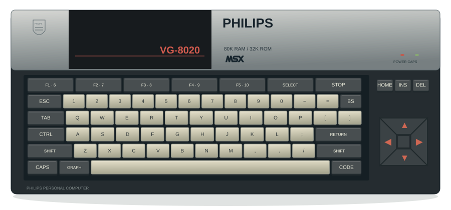
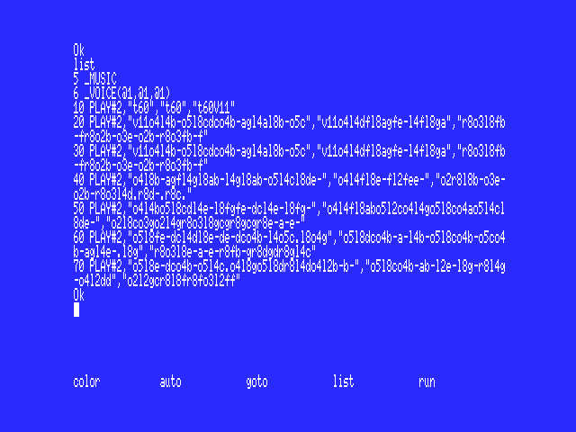
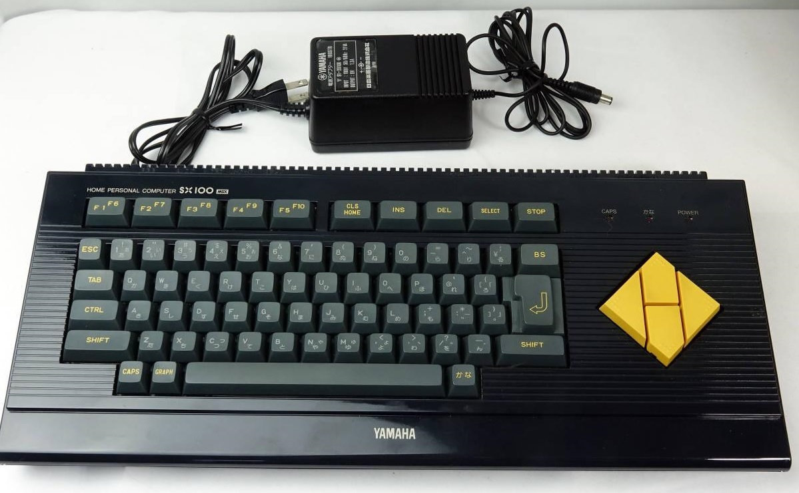
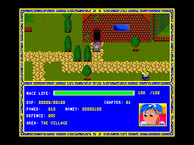

EEN KLEIN STUKJE COMPUTERNOSTALGIE
MSX BASIC Games
Zelfgemaakte games. Echte MSX-magie. Zet je computer aan
en reis terug naar de tijd dat alles begon met RUN.
1992
Alleen games die op MSX1 werken.
Over de gameselectie ↗MSX BASIC version 1.0
Copyright 1983 by Microsoft
Ok
▌

03 / ACHTER DE GAMES
Van speler naar maker.
Wat maakte de MSX-standaard en MSX-BASIC bijzonder? Ontdek de computergeneraties, mijn eerste programma’s en de tijdschriften waaruit ik leerde. Probeer daarna zelf een paar regels code.
Ontdek MSX & BASIC

04 / MIJN MSX-VERZAMELING
41 computers.
Elk een eigen verhaal.
Mijn eerste Philips, de turbo R op mijn bureau en heel veel bijzondere modellen daartussen. Ontdek de computers die ik verzamel, met hun verhalen en eigenzinnige details.
Bekijk mijn verzameling05 / MIJN LAATSTE MSX-PROJECT
Avalon MSX2.
Avalon MSX2 is het laatste MSX-project waar ik aan gewerkt heb. Een nieuw avontuur op de computer waarmee het voor mij allemaal begon.

Van een paar regels BASIC
naar een wereld op je scherm.
Tussen 1992 en 1994 maakte ik mijn eigen games op de MSX. Een toetsenbord, een idee en heel veel uitproberen. Hier kun je ze weer spelen, precies zoals toen.